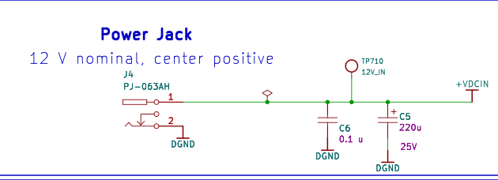
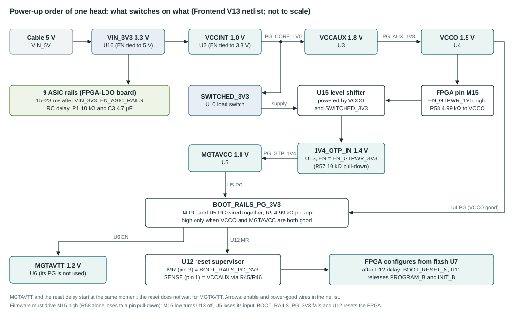
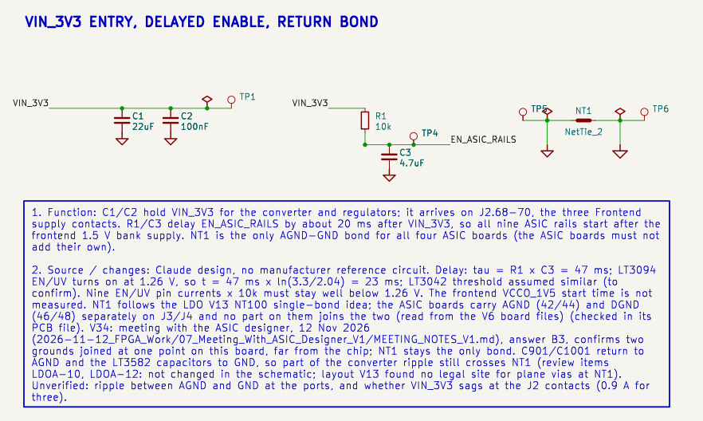
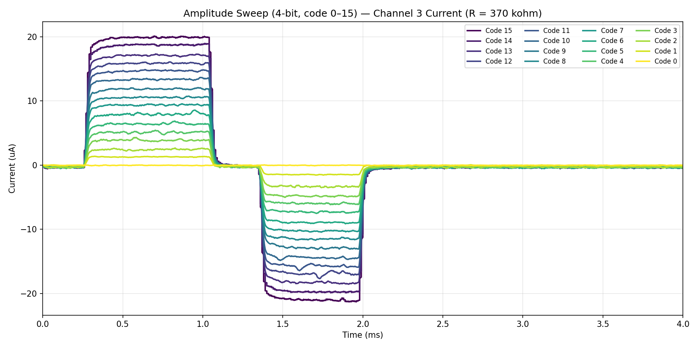

Datasheet · Section 2 · Draft V1
2Power
In short. One 12 V adapter plugs into the HDMI Extension Board. That board makes 5 V and sends it to each head through pin 19 of its cable. On the head, the Frontend turns 5 V into 3.3 V, and every other voltage on the head is made from that 3.3 V.
A few words used in this section: a rail is one supply voltage that powers several parts. A regulator turns one voltage into another, steady one. A test point (TP) is a small pad where you can touch a meter probe to measure a voltage. Parts are named by their printed labels: U is a chip, R a resistor, C a capacitor, D a diode or LED.

2.1HDMI Extension Board
This board: website page · KiCad files · schematic PDF · all files in section 1.4.
The 12 V from the adapter goes two ways: straight to the XEM8310 module, and to a 5 V regulator for the heads. Each of the eight ports then has its own electronic switch. The switch limits the current to that port: if a head or cable draws too much, the switch turns that port off, lights its red LED and tries again a moment later.
| Item | What to know |
|---|---|
| 12 V input | Barrel socket J4. Use a 12 V adapter (10.8–13.2 V), center pin positive, 5.5 mm plug with a 2.0 mm pin, rated above 5 A. |
| 5 V for the heads | One regulator (U700) makes 5.02 V, up to 6 A, for all eight ports. |
| Current limit per port | Each port switch turns off above 0.637 A at the least (0.696 A typical). |
| When ports turn on | All eight at the same moment, once the 5 V supply is steady (within 94–107 % of its target). |
| Red LEDs | One per port (D701–D708). Lit means that port is overloaded, too hot, or fed back from the head. |
| Protection | None on the 12 V input: no fuse and no protection against a reversed plug. Use only the specified adapter. |
| Voltage test holes | J920, a row of nine holes for checking the module's voltages with a meter (section B5). |
| Test pads | 44 bare pads for a meter or oscilloscope probe. V39 added 20 of them (TP720–TP739): 12 on the programming (JTAG) lines, the USB supply and the enable and status signals, and 8 ground pads beside them. No part moved and no part was added. |
Design details HDMI Extension Board power parts
| Item | Value |
|---|---|
| Input | 12 V into J4, Same Sky PJ-063AH barrel jack (8 A, 24 V; 2.0 mm pin, 5.5 mm plug; center positive). Adapter: 12 V, within 10.8–13.2 V, rated above 5 A. |
| 12 V bulk capacitance | C5 220 µF 25 V, C6 100 nF, C700–C703 4×10 µF 50 V |
| XEM8310 supply | +VDCIN straight to MC2 pins 1–4. Module accepts 7.5–15 V; its fansink wants 10.8–13.2 V; MC2 carries up to 8 A. |
| 5 V for the heads | U700 TI TPSM63606: R700 40.2 kΩ / R701 10 kΩ → 5.02 V; R702 13 kΩ → 1 MHz; C704–C707 4×47 µF; 6 A rating |
| Port switches | U701–U708 TI TPS2553 (auto-retry). R711–R718 37.4 kΩ → current limit 637 / 696 / 764 mA (min / nom / max; 630–771 mA including the 1 % resistor). C721–C728 1 µF on each output. Red FAULT LED D701–D708 and test point TP701–TP708 per port. |
| Port switch-on | All eight together, once U700 reports 5 V within 94–107 %; no staggering |
| Worst-case total | 8 ports at maximum limit = 6.1 A against U700's 6 A rating (trip 8.3 A); only with all ports overloaded at once |
| Board 3.3 V | From the XEM8310 (MC2.70); this board draws a few mA (JTAG switches, monitor) from a rail with a 6.6 W budget |
| PCIe slot power | Not used. Slot 12 V reaches only a test point. Slot 3.3 V only powers level shifter U4; slot 3.3 Vaux feeds the sideband pull-ups through load switch U5. |
| Second 12 V input | None; J4 is the only power input. |
| Protection | No fuse, reverse-polarity or surge protection on +VDCIN. |
| Test holes | J920: +1.2V_DDR, VIO1, +1.8V, DGND, +VDCIN, DGND, +3.3V, VIO3, VIO2 |
Sources. TI TPSM63606 datasheet SLVSGB4B, Fig. 9-1, Table 8-1; TI TPS2553 datasheet SLVS841G, Table 9-2; Opal Kelly, Powering the XEM8310 (the module's supply range); Same Sky PJ-063AH drawing; HDMI Extension Board V39 schematic and netlist.

+VDCIN; C5 and C6 smooth it; TP710 is the 12 V test point. Click a schematic to open it full size.

A head needs at most about 0.68 A at 3.3 V. The cable's thin wires lose some voltage, so the 5 V arriving at the head is lower when the head draws more. The Frontend's 3.3 V regulator keeps working until its input falls to about 3.4 V, so the voltage loss itself is not the problem. The real limit is the port switch, which turns off above 0.637 A. A lower input voltage makes the regulator draw more current to deliver the same power, so a thinner (higher-resistance) cable leaves less power for the head:
| Cable resistance (both wires) | Voltage arriving at the head | Most the head can draw at 3.3 V |
|---|---|---|
| 0.5 Ω | 4.62 V | about 0.80 A |
| 1 Ω | 4.30 V | about 0.75 A |
| 2 Ω (thin 2 m cable) | 3.67 V | about 0.64 A |
| above about 2.4 Ω | below 3.4 V | the 3.3 V regulator can no longer hold 3.3 V |
If a head draws more than its cable can deliver, it does not get the extra current: its port switch turns off and retries, and the red LED lights. Answer: the head needs 0.32 A typically and 0.68 A at worst (section 2.5); the chosen 3 ft cable delivers up to about 0.74–0.78 A (section 2.6).
Assumptions: a 5.02 V source, 0.125 Ω for the port switch and board, and 90 % regulator efficiency (assumed, not read from the datasheet curve). The Frontend regulator is U16, MPS MPM3833C (2.75–6 V in, 3 A, 100 % duty in dropout, 130 mΩ dropout resistance).
2.2Frontend FPGA board
This board: website page · KiCad files · schematic PDF · all files in section 1.4.
All of a head's power arrives on cable pin 19 as 5 V. A regulator on the Frontend turns it into 3.3 V. That 3.3 V feeds the Frontend's other regulators and, through connector J2, the whole FPGA-LDO board.

VIN_5V, test point TP14) comes in on the left; the 3.3 V output (VIN_3V3, TP2) leaves on the right. R59/R60 set the voltage.The Frontend's FPGA (an AMD Artix-7, part XC7A35T-2CSG325C) needs several different supply voltages, each for a different part of the chip:
| Rail name | Voltage | What it powers |
|---|---|---|
| VIN_3V3 | 3.315 V | Every other regulator on the head |
| VCCINT | 0.999 V | The FPGA's internal logic (its “core”) |
| VCCAUX | 1.80 V | The FPGA's auxiliary circuits and its start-up pins; the memory chip (flash) that holds the FPGA's program; the 25 MHz clock oscillator |
| VCCO | 1.50 V | The FPGA's input and output pins: every line to the ASICs and the cable's clock and command inputs. 1.5 V is the ASICs' signal level. |
| MGTAVCC | 1.008 V | The FPGA's high-speed transmitter, which sends the data down the cable |
| MGTAVTT | 1.199 V | The same transmitter's output stage |
| SWITCHED_3V3 | 3.3 V | The 125 MHz clock oscillator and a level shifter; switched on after the core is up |
Design details Frontend regulators
| Rail | Made by | Feeds | Set by |
|---|---|---|---|
| VIN_3V3, 3.315 V | U16 MPM3833C (2.75–6 V in, 3 A) | all regulators below; FPGA-LDO board | R59 / R60 |
| VCCINT, 0.999 V | U2 MPM3833C | FPGA core (21 balls) | R1 / R2 |
| VCCAUX, 1.80 V | U3 MPM3833C | FPGA auxiliary, bank 0 (configuration) at 1.8 V, VCCBATT, 1.8 V flash U7, XADC (via L1), 25 MHz oscillator (via L3) | R4 / (R5 ∥ R55) |
| VCCO, 1.50 V | U4 MPM3833C | all user I/O banks (20 balls): every ASIC line and the cable LVDS, at the ASICs' 1.5 V level | R7 / R8 |
| 1V4_GTP_IN, 1.40 V | U13 MPM3833C | U5, U6 | R41 / R42 |
| MGTAVCC, 1.008 V | U5 TPS74801DRCR | transceiver (4 balls) | R10 (1.3 kΩ, 1 %) / R11 |
| MGTAVTT, 1.199 V | U6 TPS74801DRCR | transceiver (5 balls), MGTRREF | R13 / R14, 0.1 % |
| SWITCHED_3V3 | U10 MP5077 load switch | 125 MHz oscillator Y1, level shifter U15 | R37 (limit) |
MGTAVCC tolerance. R10 is 1.3 kΩ, the value of the Trenz TE0714 reference design (TE0714 REV04 schematic, p. 9), fitted as a 1 % part that the assembler stocks (JLC part C226451). With R11 (4.99 kΩ) the rail is 0.8 V × (1 + 1.3 / 4.99) = 1.008 V. The regulator part number TPS74801DRCR can be delivered with an older chip (accurate to ±2 %) or a newer one (±1 %) (TI TPS748 data sheet, Rev. N, section 5.5, p. 6, and Table 8-1, p. 33). Taking the regulator, both resistors, a 60 °C temperature rise and the feedback pin current all at their worst at once, MGTAVCC is 0.982–1.035 V with the older chip and 0.993–1.024 V with the newer one. AMD asks for 0.97–1.03 V (AMD DS181 v1.27.1, Table 2), so only the older chip at its worst is over, by 5 mV; the absolute maximum is 1.1 V (Table 1). The owner accepted this on 19 Nov 2026. Measure MGTAVCC on test point TP7 of the first board.
Power-up order. The rails switch on one after another, and each waits until the one before it is steady (its regulator signals “power good”). The order is: 5 V arrives → 3.3 V → core → auxiliary 1.8 V (together with the switched 3.3 V) → I/O 1.5 V → the transmitter's 1.4 V input (switched on through FPGA pin M15, which a resistor holds high) → MGTAVCC. When both the I/O 1.5 V and MGTAVCC are good, MGTAVTT starts and, at the same moment, a reset chip (U12) starts its delay; it then lets the FPGA start, and the FPGA loads its program from the flash memory chip (U7).


PG_AUX_1V8), so the I/O supply starts only after the auxiliary 1.8 V.Design details power-up sequence
5 V arrives → VIN_3V3 → VCCINT → (VCCAUX, SWITCHED_3V3, both on PG_CORE_1V0) → VCCO (on PG_AUX_1V8) → FPGA pin M15 (EN_GTPWR_1V5, pulled up to VCCO by R58 4.99 kΩ) → level shifter U15 (VCCO side to SWITCHED_3V3 side) → EN_GTPWR_3V3 (R57 10 kΩ pull-down) → U13 makes the 1.4 V GTP supply → U13 power-good (PG_GTP_1V4) → U5 makes MGTAVCC. U4's and U5's power-good outputs are joined on BOOT_RAILS_PG_3V3 (R9 4.99 kΩ pull-up); when VCCO and MGTAVCC are both good it starts U6 (MGTAVTT) and, at the same moment, U12's reset delay (U12 pin 3). U12 also waits for VCCAUX on its sense input (FLASH_READY_SENSE); then it releases reset → the FPGA configures from flash U7. U6's power-good is not connected, so the reset does not wait for MGTAVTT.
The FPGA's two start-up lines, PROGRAM_B and INIT_B, are each held high by a 4.7 kΩ pull-up to the 1.8 V rail (R17, R18). AMD asks for 4.7 kΩ or less on each (AMD UG470 v1.17, Table 2-4, p. 21).
The transceiver order follows AMD DS181 v1.27.1, p. 8 (MGTAVCC before MGTAVTT). Firmware must keep M15 high: drive it high in the FPGA design (before configuration, R58 holds it high). It cannot switch the GTP supply off on this board: M15 low turns U13 off, U5 loses its input, U5's power-good pulls BOOT_RAILS_PG_3V3 low and U12 resets the FPGA, which starts the sequence again.
AMD, the FPGA maker, recommends powering VCCAUX before VCCO, “to achieve minimum current draw and ensure that the I/Os are 3-stated at power-on” (AMD DS181 p. 8). In plain terms, the FPGA's pins then stay switched off, instead of briefly driving the ASIC lines, while power comes up. VCCO powers every pin that drives the ASICs. This is now built: the 1.8 V regulator's power-good output (U3 pin 12) switches on the 1.5 V regulator (U4 pin 4), on the new net PG_AUX_1V8, routed on copper layer 6. No extra resistor is needed, because U3's power-good pin has a built-in 440 kΩ pull-up to its 3.3 V input. VCCO now waits until VCCAUX is within 10 % of its value, about 1.5 ms later.
How much the Frontend draws (estimate). These are estimates; there is no power calculation from the FPGA tools (Vivado) yet, and nothing has been measured. The FPGA's internal logic draws the most and is the least certain number.
| Low | Expected | High | |
|---|---|---|---|
| Frontend power | 0.47 W | 0.77 W | 1.40 W |
| Frontend current from the 3.3 V rail | 0.14 A | 0.23 A | 0.42 A |
2.3FPGA-LDO board
This board: website page · KiCad files · schematic PDF · all files in section 1.4.
The ASICs need nine separate, very quiet supply voltages. The FPGA-LDO board makes all nine from the head's 3.3 V. Each voltage is shared by all eight ASICs: it leaves on the same pin of both ASIC connectors, J4 (ASIC1–4) and J3 (ASIC5–8).
All nine regulators start together, about 15–23 ms after the 3.3 V arrives. A slow resistor-capacitor delay (R1 10 kΩ, C3 4.7 µF) on the line EN_ASIC_RAILS sets this delay, so the ASICs power up only after the head's other supplies are steady.

EN_ASIC_RAILS (TP4), and the single joint NT1 between digital ground (TP5) and analog ground (TP6). The note box is the schematic's own explanation.The board has two grounds: analog ground (AGND), the quiet reference for the recording circuits, and digital ground (DGND), the return for the digital signals. They join at a single point on this board (a “net tie”, NT1), so noisy digital currents do not flow through the analog ground.
Design details ground contacts to the Frontend
The two connectors to the Frontend, J1 and J2, carry 15 ground contacts. A via is a small plated hole that joins a pad to the copper layers inside the board; here it takes each ground contact to the two ground planes by the shortest path. Since layout V23 (19 Nov 2026), 11 of the 15 ground contacts have a via at the pad. Two more (J1.41 and J2.50) have their own via within 2.3 mm. The last two (J2.15 and J2.27) have none of their own: they reach the vias of their neighbours through the ground strip under the connector, about 2.7 mm and 4.0 mm of copper. A via at those two pads would cut the analog-ground strips that serve regulators U3 and U10, so the owner decided on 19 Nov 2026 to leave them as they are.
| Rail (name in the ASIC) | Voltage | Regulator | Port pin | Notes |
|---|---|---|---|---|
| VDD_FE | 1.50 V | U2 LT3042 | 50 | very low noise (about 0.8 µV rms) |
| VDD_ADC | 1.50 V | U3 TPS7A2015 | 56 | |
| VDD_DRIVER | 1.50 V | U4 TPS7A2015 | 38 | |
| DVDD | 1.50 V | U5 TPS7A2015 | 34 | digital supply; also holds the chip-reset line high through R19 |
| REF_VDD | 1.50 V | U6 LT3042 | 52 | very low noise |
| VDD_CGEN | 1.50 V | U7 TPS7A2015 | 1 | 1.5 V as the ASIC designer answered (originally 1.6 V) |
| REF_VCM | 0.75 V | U8 LT3042 | 40 | very low noise; resistor R802 gives it a small steady load |
| VDD10 | +8.06 V | U9 LT3042 | 36 | stimulation (positive side); made from +12 V |
| VSS10 | -8.06 V | U10 LT3094 | 54 | stimulation (negative side); made from -12 V |

EN_ASIC_RAILS. R802 (47 kΩ), beside the output capacitor of U8, is the load on the 0.75 V reference.Design details why the 0.75 V reference has a load resistor
When it is set below 1 V, the LT3042 regulator needs at least 10 µA of load to stay stable (ADI LT3042 data sheet, Electrical Characteristics, “Minimum Load Required” and Note 13, p. 5). REF_VCM is 0.75 V, and the current the ASICs draw from it is not known. Since layout V22 (19 Nov 2026), resistor R802 (47 kΩ, 1 %) therefore sits between REF_VCM and analog ground. It draws 0.75 V / 47 kΩ = 16 µA (15.5 µA with the voltage 2 % low and the resistor 1 % high), so the regulator is stable whatever the ASICs draw.
The names come from the ASIC: FE suggests the input amplifiers (“front end”), ADC the analog-to-digital converter, CGEN the clock generator, VCM a mid-level reference (0.75 V is half of 1.5 V). The ASIC designer has not documented exactly which circuits each rail feeds.
Stimulation supply. The ±8.06 V rails are made in two steps. First a small converter (U1, ADI LT3582-12) makes +12 V and -12 V from 3.3 V. Then two quiet regulators bring those down to ±8.06 V. Two solder jumpers (JP1, JP2) join the two steps; cutting them lets a bench supply feed the stimulation regulators instead, at test points TP8 and TP9 with the return at TP6.

Safe state before the FPGA starts. Until the FPGA has loaded its program, its pins are not driven and could float to any level. Resistors (“pull-downs”) therefore hold the stimulation, reset and clock lines low, so no ASIC can start stimulating by accident; one resistor holds the chip-reset line high.
Design details FPGA-LDO board ratings and pull-down resistors
LT3042 is rated 200 mA and TPS7A20 300 mA, against about 55 mA for all eight ASICs' low-voltage rails together. Sixteen 10 kΩ pull-downs hold these lines low: STIM_EN, STIM_START, STIM_CHB and STIM_CLK (R2–R5); FE_RESET and IMP_TST (R16, R17); the latch of each bottom ASIC board (R18 for port J4, R28 for port J3); and the two ASIC clocks, the four settings clocks and the two top-board latches (R20–R27). R19 holds CHIP_RESET high. R28 was added in layout V24 (19 Nov 2026) together with the second bottom-board latch line.
Stimulation. 128 of each ASIC's 512 sites can stimulate (4 stimulators for every 16 amplifiers, 64 per side of the chip). A stimulation pulse is biphasic: current flows one way, then the other way, so the net charge left in the tissue is close to zero. The ASIC balances the charge passively. The current is set by a 4-bit code (16 levels), about 1.5 µA per step, up to about 22.5 µA, at under 200 pulses per second. Pulses can be monopolar or bipolar and are fully programmable. The output can swing up to ±10 V by the chip's design (its “compliance”). In the ASIC designer's bench test, the stimulator gave about +20 / -21 µA into a 370 kΩ test load (about ±7.4–7.8 V).


The stimulator pushes a set current, so the voltage it needs is current times the electrode's resistance to the tissue (its impedance): V = I × Z. The table shows that voltage, positive in one half of the pulse and negative in the other:
| Site impedance | at 22.5 µA (maximum) | at 1.5 µA (lowest step) | Note |
|---|---|---|---|
| 10 kΩ | ±225 mV | ±15 mV | |
| 100 kΩ | ±2.25 V | ±150 mV | |
| 300 kΩ | ±6.75 V | ±450 mV | |
| 370 kΩ | ±7.4–7.8 V (measured) | ±0.56 V | at the edge of the ±8.06 V supply |
| 1 MΩ | — | ±1.5 V | full current not reachable |
Result: with ±8.06 V supplies, the full current is possible only into sites of about 350 kΩ or less.
Design details stimulation power
The supply provides 8.06 V × I per stimulator (0.18 mW at 22.5 µA); only I2Z reaches the electrode. Worst case: all 1,024 stimulators of a head at maximum in the same phase take 23 mA from one rail (186 mW), about 0.13 A extra from VIN_3V3.
2.4ASIC boards
This board: website page · bottom KiCad · top KiCad · bottom PDF · top PDF · all files in section 1.4.
The bottom and top ASIC boards are wired the same way. Each holds two ASICs and 31 small capacitors that steady their supplies: a 10 nF and a 100 nF on each supply pin pair, and one more 100 nF (C63) on VDD_CGEN beside the first chip. Every supply and both grounds sit on the same pin of the board's two connectors (J3 and J4), so the bottom board passes power straight up to the top board. One port feeds four ASICs. Analog ground (pins 42, 44) and digital ground (pins 3, 5, 46, 48) stay separate on the ASIC boards; they join only on the FPGA-LDO board. Each supply uses one connector contact rated 0.3 A, against a largest load of about 12 mA.
To tell the two board types apart, each board is printed with TOP or BOTTOM and its version (V15) on both faces. These boards are made at PCBWay and have no test pads.
Design details ASIC board connectors
J3, on the underside, is a Hirose DF40C-80DS-0.4V(51) socket; J4, on the top side, is a Hirose DF40C-80DP-0.4V(51) plug. These are the same two parts as on the FPGA-LDO board's ASIC ports, so every joint in the stack is one socket on one plug, and a mated pair holds the boards 1.5 mm apart (Hirose DF40 series, catalog of Jan. 2025, p. 6, 8 and 14). The part numbers are in the schematics and the bills of materials since V15 (19 Nov 2026). The connector has no polarity key (same catalog, p. 8, note 4), so the printed marks and the pin-1 dots are the only guard against a reversed board.
Since ASIC board V10 (17 Nov 2026) every capacitor has a value and a JLC part: 10 nF (C85930) and 100 nF (C307379). The values come from a short talk with the ASIC designer and still need his written check.
2.5Whole-head power budget
This table adds up the current one head takes from its 3.3 V rail. All numbers are estimates; nothing has been measured.
| Current from the head's 3.3 V rail | Low | Expected | High |
|---|---|---|---|
| Frontend board | 0.14 A | 0.23 A | 0.42 A |
| Eight ASICs' low-voltage supplies | 0.05 A | 0.07 A | 0.13 A |
| ±8 V stimulation supply | 0.02 A | 0.02 A | 0.13 A (all stimulators at maximum) |
| Head total | 0.21 A | 0.32 A | 0.68 A |
These will be firmed up with a power calculation for the FPGA (from the Vivado tools) and the ASIC designer's current for each supply.
2.6Cable
Chosen: MyCableMart Micro-HDMI to Micro-HDMI “with Ethernet”, 3 ft (0.91 m), listed with 32 AWG wire (Amazon B014HMWWHA). One per head. AWG is the American wire gauge; a larger number means a thinner wire.
Check the plug size when the cables arrive: the moulded plug must be under 12.5 mm wide (the HDMI Extension Board's eight sockets are 13.1 mm apart) and under about 9.2 mm thick at the head end. MyCableMart does not publish either size.
Any other cable can be used if it meets all of these:
| Requirement | Why |
|---|---|
| Micro-HDMI (Type D) plug at both ends, all 19 pins wired | Both boards use Molex 46765-1001 Micro-HDMI sockets |
| “High Speed HDMI with Ethernet” or better | Pin 2 carries a programming line (JTAG TMS); cables without Ethernet may leave that wire out |
| High Speed (10.2 Gb/s class) | One wire pair carries the recorded data at 2.5–3.125 Gb/s |
| Pin 19 resistance under 1.6 Ω (out and back) | So the worst-case head (0.68 A) stays under the port's 0.637 A limit at 5 V. This cable: about 0.7 Ω at 32 AWG, 1.1 Ω at 34 AWG, so up to 0.78 / 0.74 A is available at 3.3 V |
| Plug under 12.5 mm wide | The sockets are 13.1 mm apart |
Design details what each cable pin carries
3/5 recording data; 6/8 32 MHz clock; 9/11 command with SYNC; 12/14 separate SYNC (ports 3–6); 1 VREF (lets the HDMI Extension Board sense the head); 2, 15, 17, 18 JTAG TMS, TDI, TCK, TDO; 16 ground; 19 +5 V. Check the plug thickness on the first cables.